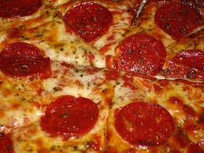

From Domino's pizza. Presented by Henry.
Pizza
Pizza is a cheesy, doughy, snack, with many toppings.
Preparation.
- 1 cup tomato-and-basil pasta sauce
- 1 (10-oz.) package prebaked whole wheat thin Italian pizza crust
- 1/4 cup turkey pepperoni slices (about 24)
- 1 1/2 cups (6 oz.) part-skim mozzarella cheese
Cooking.
Spoon tomato-and-basil pasta sauce evenly over crust, leaving a 1-inch border around edges. Top with half of pepperoni slices. Sprinkle with cheese. Top with remaining pepperoni.
Bake pizza at 450° directly on oven rack 11 to 12 minutes or until crust is golden and cheese is melted. Cut into 6 slices. Serve immediately.